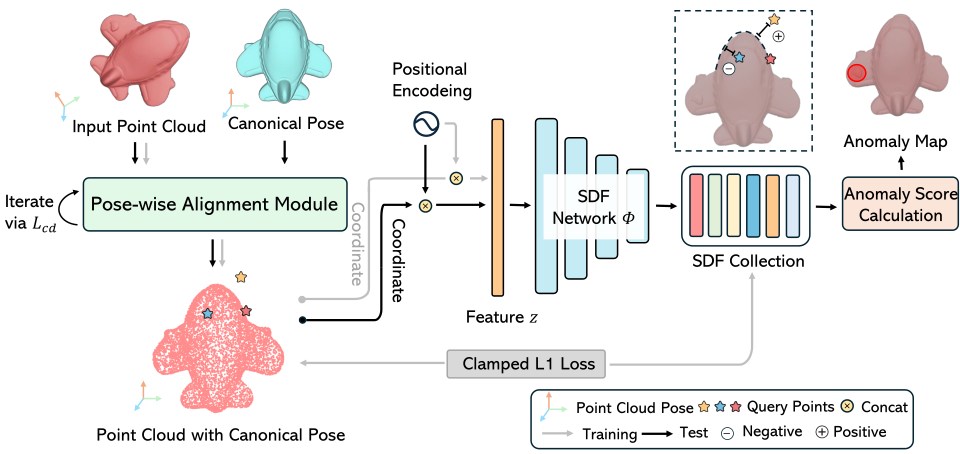
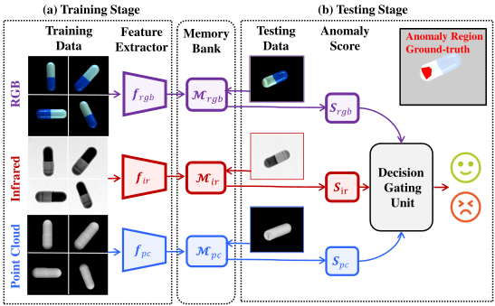
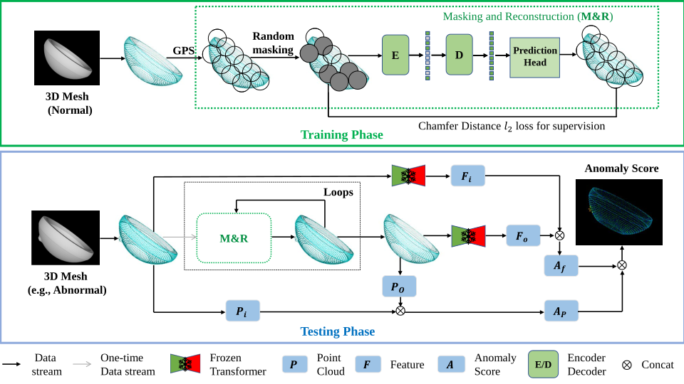

UVTA: Unified Visual-Tactile-Action Modeling from Human Demonstrations for Dexterous Manipulation
arXiv, 2026
Learning contact-aware dexterous manipulation from human visual-tactile demonstrations through joint action and tactile prediction.
李文峤
School of Artificial Intelligence, Shanghai Jiao Tong University
I am a Ph.D. student at the School of Artificial Intelligence, SJTU, advised by Dr. Siyuan Huang, Prof. Chuan Wen, and Dr. Tengyu Liu. During my master's studies, I was supervised by Prof. Yingna Wu and Prof. Shenghua Gao. I am also a Student Researcher at Sharpa and the Beijing Institute for General AI, working on dexterous manipulation through full-stack solutions.
My research interests lie in dexterous manipulation and robot perception. My long-term goal is to make robots more useful. I am currently focusing on dexterous manipulation, tactile sensing, exoskeletons, and representation learning.
arXiv, 2026
Learning contact-aware dexterous manipulation from human visual-tactile demonstrations through joint action and tactile prediction.
IROS, 2026
A lightweight dexterous teleoperation system that maps muscle activity to hand poses and robot actions.

ICCV, 2025
Continuous, pose-aware shape representations for precise 3D anomaly localization and geometric repair.

CVPR, 2025
Combining RGB, 3D geometry, and infrared thermography to detect both external and internal object defects.
CVPR, 2025
Reasoning about physical anomalies from video dynamics and interaction outcomes through real-time robot–object interaction.

CVPR, 2024
Synthetic 3D anomalies and iterative masked reconstruction for scalable point-cloud anomaly detection.
Academic Service: Reviewer for CVPR, NeurIPS, ECCV, ACM MM, IEEE TMM, and other venues.